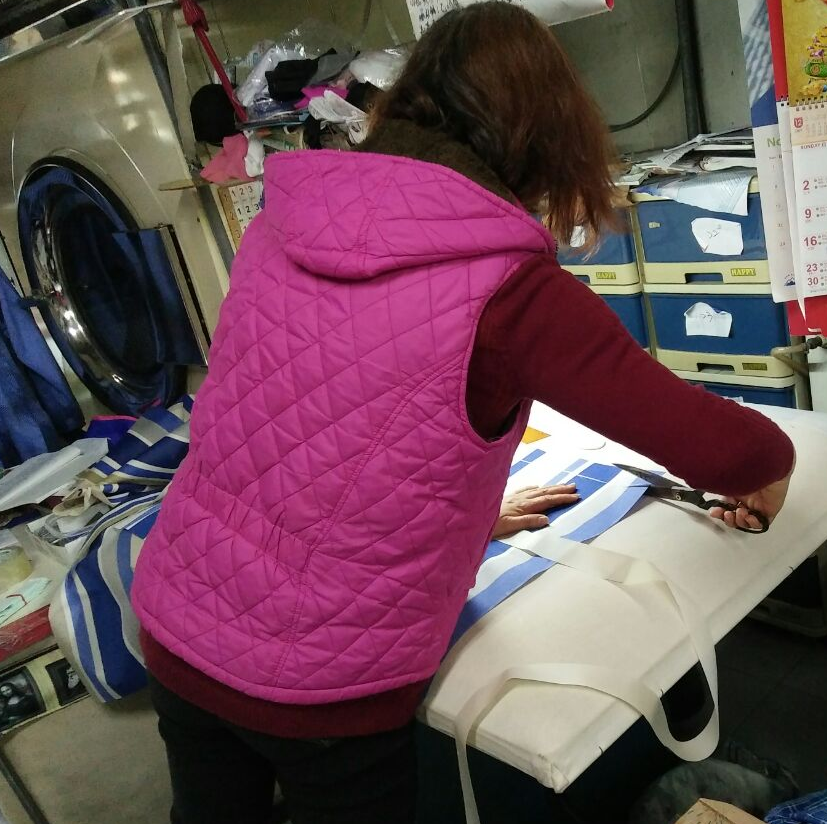
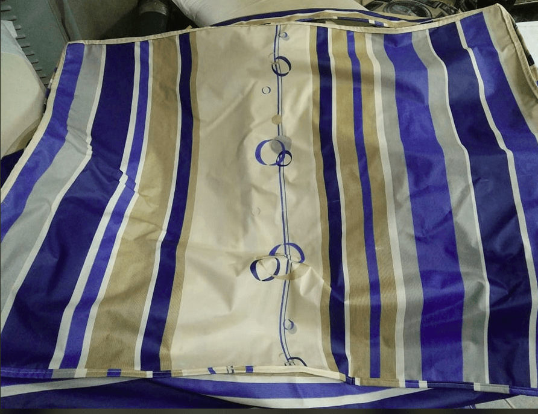
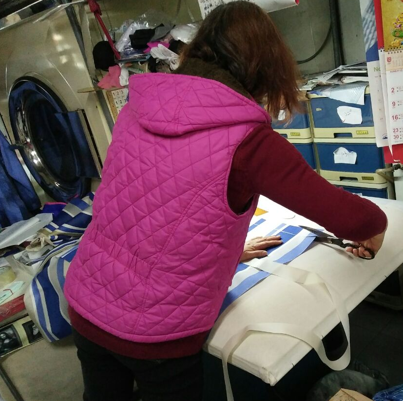
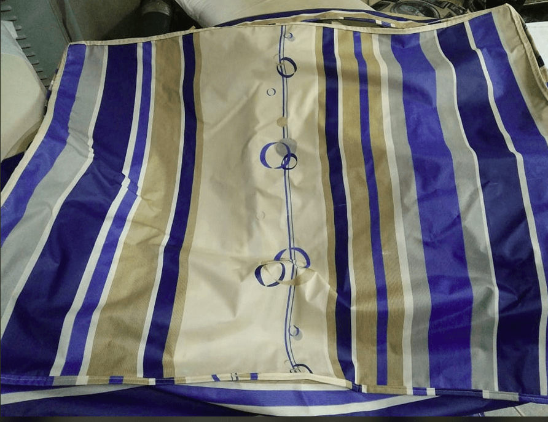

這次的需求是以客人提供的塑膠收納袋為藍本，重新製作新的防水收納袋，接下來帶大家走一次這次製作的流程😊
製作步驟
- 將防水布裁切
- 裁切滾邊布與四周側邊布
- 將舊的收納袋拉鍊取下
- 以滾邊的作法將拉鍊車回防水布

評估這次收滾邊納袋的製作，需要先將防水布裁切，四周加上滾邊以達到立體的效果，作工較為繁瑣
🙅要特別注意的是防水布不能使用蒸氣熨斗來燙，會造成防水材料的損壞

防水收納袋製作完成拉
謝謝大家耐心的讀完全文～～
有任何想法歡迎到我們的粉絲專頁留言喔😉
祝大家新年快樂
這次的需求是以客人提供的塑膠收納袋為藍本，重新製作新的防水收納袋，接下來帶大家走一次這次製作的流程😊

評估這次收滾邊納袋的製作，需要先將防水布裁切，四周加上滾邊以達到立體的效果，作工較為繁瑣
🙅要特別注意的是防水布不能使用蒸氣熨斗來燙，會造成防水材料的損壞

防水收納袋製作完成拉
謝謝大家耐心的讀完全文～～
有任何想法歡迎到我們的粉絲專頁留言喔😉
祝大家新年快樂